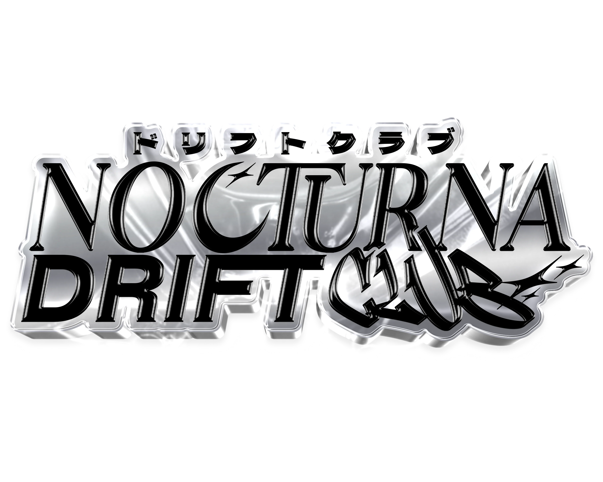
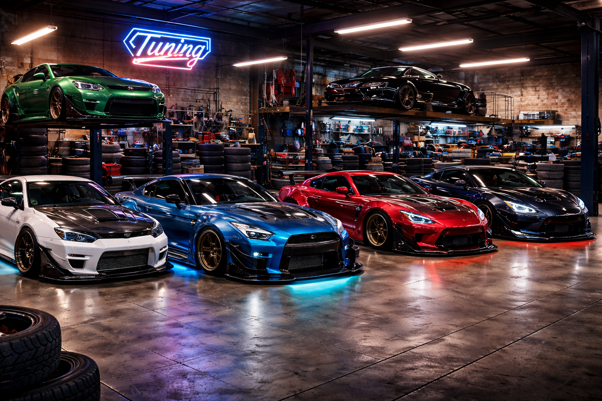

El sistema de Nocturna esta diseñado para la gestión eficiente del taller automotriz. A través de esta
plataforma, el administrador puede supervisar y organizar de manera centralizada la información de los mecánicos
y clientes del taller.
El sistema permite visualizar, registrar y administrar los datos de cada mecánico, facilitando el
control del personal y sus actividades dentro del taller. Asimismo, brinda acceso a la información de los
clientes, permitiendo un mejor seguimiento de los servicios realizados y una atención más personalizada.
Con una interfaz clara y funcional, Nocturna optimiza la administración interna del taller, mejorando la
organización, la productividad y la calidad del servicio ofrecido.